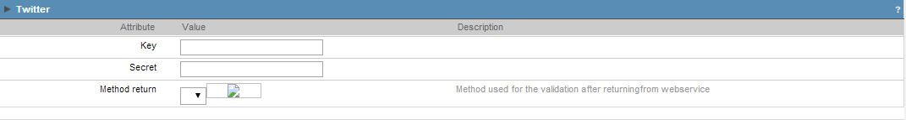
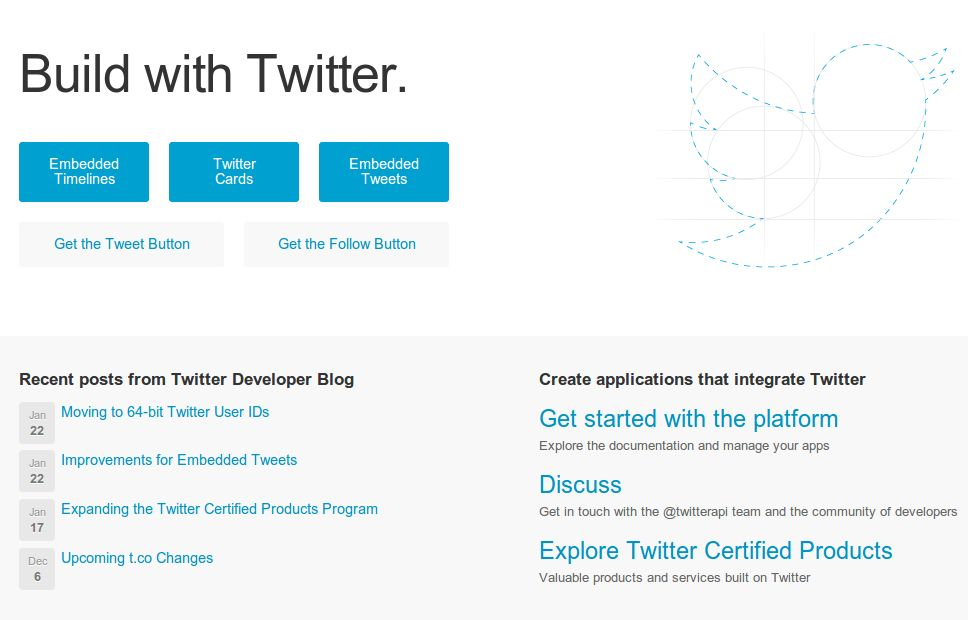
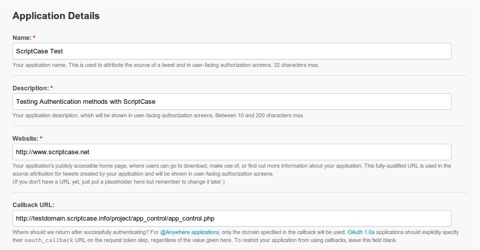
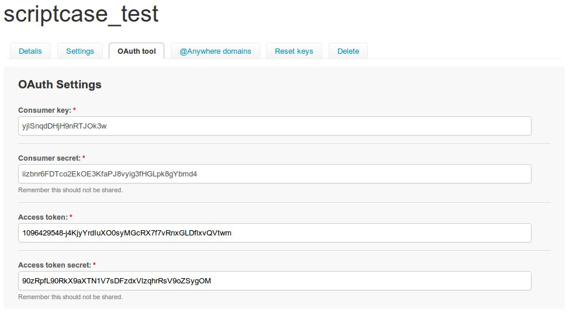

Twitter

Image1: Twitter authentication Fields.
When creating a Twitter Authentication Button, you need to fill these fields:
- Key - Twitter Application ID. This Id will be given by the Twitter Developer's page.
- Secret - Twitter service will give you a secret key to enable your application to run on a website.
- Method return - Method to be ran when Twitter service return the data requested.

Image2: Twitter developpers page. (01/29/2013)
To create a Twitter application and receive your key and secret for your website, you must follow these steps:
- Go to https://dev.twitter.com/ and register your account
- On the "My Applications" page click on Create New Application
- Enter your Application details as asked and proceed with the application creation.

Image3: Application details.
On the top of the page you can find your Consumer ID and Consumer Secret at the OAuth tool tab for your SC application only.

Image4: OAuth keys
You can use this Consumer ID and Consumer Secret to connect this SC application to Twitter.